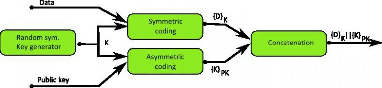
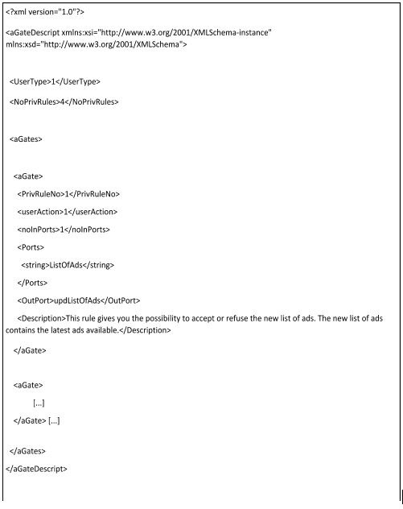
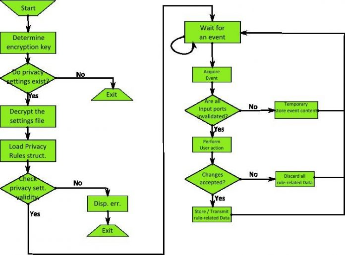
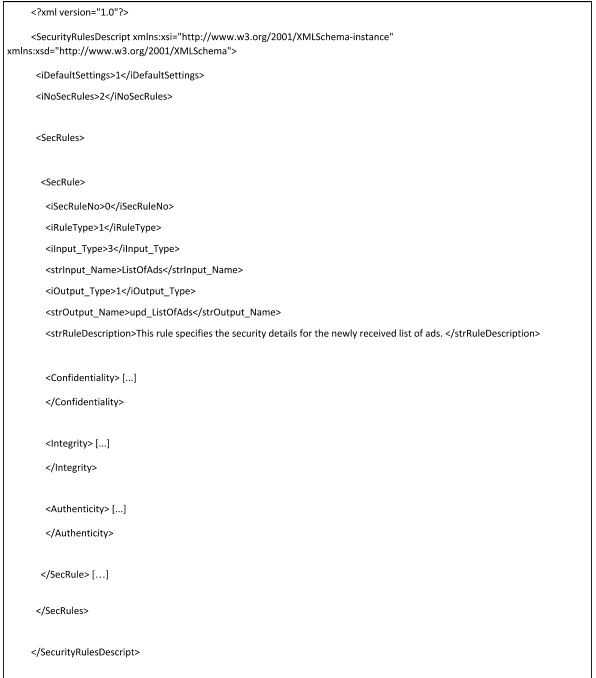

Data publicării: 12.02.2018
Autor articol: Mircea Vaida
1. PROIECTARE DE COMPONENTE DE SECURITATE ŞI PRIVACY PENTRU APLICAŢII ADAPTIVE
Ca urmare a colaborarilor pe mai multe domenii intre grupul de cercetare Helios de la UTC-N si laboratorul I3S Rainbow de la univ. de Nice, Sophia Antipolis au fost dezvoltate mai multe solutii practice care au fost integrate in cadrul unor proiecte de cercetare dezvoltate de partenerii francezi. In cadrul domeniului securitatii si privacy au fost efectuate mai multe stagii (Mihai Coros, Dan Pita, Radu Terec, Mohanu Ioana) care au dus la solutii practice integrate in diverse platforme adaptive. Se vor prezenta in continuare cateva rezulate obtinute ca urmare acestor activitati integrate in cadrul unor lucrari de licenta si dizertatie realizate impreuna cu partenerii francezi.
1.1 Introducere
În zilele de astăzi calculatoarele sunt prezente în aproape orice context, fie că este vorba de sistemul medical, de învățământ sau doar de o simplă tranzacție online. Totodată, datorită dezvoltării puternice a domeniului IT, a crescut și numărul potențial de riscuri la care un utilizator obișnuit este supus. De multe ori este imposibil să ceri utilizatorului să gestioneze singur aceste amenințări, pentru că tratarea acestora necesită cunoștințe foarte avansate în domeniul IT.
Unele din domeniile cele mai importante când vorbim de calculatoare sunt cele de securitate și privacy. Domeniul securității trebuie să asigurare siguranța informației în timp ce domeniul privacy- ului trebuie să asigure securitatea sferei personale a utilizatorului.
Deși există preocupare pentru securitate încă din vremuri foarte timpurii [4] prin cifrurile și codurile dezvoltate de greci și romani, în domeniul informatic, putem vorbi de securitate abia după al 2lea război mondial. Primul sistem care ia în considerare securitatea, este sistemul Multics [5], care propune o abordare a securității direct din etapa de proiectare.
Astăzi, domeniile securității și privacy au evoluat către un concept mai dinamic și mai aproape de adevăratele nevoi ale pieței IT.
1.2 Obiective
Abordările de până acum au tratat sistemele de securitate prin implementarea celor 5 principii de securitate încă din etapa de dezvoltare. Dacă securitatea sau privacy-ul nu sunt integrate de la început în aplicație, soluționarea acestei probleme poate devenii foarte dificilă.
Drept urmare, este o nevoie stringentă ca aplicațiile care nu au dezvoltate partea de securitate și privacy să o poată integra și după etapa de dezvoltare a aplicației.
Obiectivul acestei lucrări este de a crea o arhitectură intuitivă, suportată pe mai multe sisteme de operare, dinamică și ușor adaptabilă pentru a putea integra componente de securitate și privacy într-o aplicație lipsită de aceste elemente.
Dezvoltarea unei aplicații suportată pe mai multe platforme este o necesitate pentru că există numeroase servicii care se folosesc de mai multe platforme pentru a rula. Astfel, arhitectura propusă trebuie să fie capabilă să se adapteze atât la cerințele unui telefon mobil (care necesită algoritmi cu consum mai redus de energie) cât și la cerințele unui server de comunicații, care are de deservit zeci-sute sau poate chiar mai multi clienți.
Arhitectura a fost dezvoltată pe platforma WComp pentru C# .NET Framework 1.1, de la univ. de Nice, Franta, ceea ce înseamnă că singura cerință pentru a putea rula aplicația este ca aceasta să suporte platforma .NET.
1.3 Fundamentare teoretică
Acest subcapitol prezintă conceptele generale folosite în cercetare pentru a putea dezvolta arhitecturile pentru securitate și privacy. Se va începe prin a prezenta cele cinci principii de bază ale securității: confidențialitate, integritate, autenticitate, controlul accesului și non-repudiere.
În continuare, se vor prezenta standarde existente pentru gestionarea privacy-ului, evidențiind în mod deosebit caracteristicile necesare pentru a dezvolta aplicații orientate către privacy.
Gestionarea securității
Pentru a simplifica și gestiona procedurile de securitate, standardul [7] definește proprietățile și mecanismele necesare pentru a adăuga securitate la o aplicație. Prin proprietate de securitate înțelegem atributele folosite de politica de securitate. Iar politica de securitate se definește ca un set de reguli care dictează cum să se aplice proprietățile și mecanismele de securitate.
Confidențialitatea asigură secretizarea informației prin folosirea unor algoritmi criptografici.
Astfel, doar persoanele care pot decripta informația pot vizualiza adevăratul ei conținut.
Conform [8], criptografia este un mijloc de a procesa informația în format clar, prin aplicarea unui cifru și are ca rezultat un text cifrat. Operația de decriptare este procesul invers: acela de preluare a textului cifrat și cifrul și are ca rezultat textul în clar.
În implementarea confidențialității [1], s-au folosit atât algoritmi criptografici simetrici cât și asimetrici. Detalii despre proprietățile acestor algoritmi sunt prezentate în [36]. Schema care stă la baza implementării a acestei proprietăți e prezentată în figura de mai jos.
Ideea de bază din spatele acestei proprietăți este de a cripta separat cheia folosită pentru criptarea informației de informația efectivă ce urmează a fi criptată. Astfel, se va genera aleator cheia simetrică, K. Cu acest cifru se va cripta informația ce trebuie transmisă, {D}K. Cheia simetrică, K este criptată asimetric folosind cheia publică a receptorului, {K}PK.
În final, cheia și informația criptată sunt concatenate, {D}K||{K}PK, iar rezultatul este transmis.

Proprietatea de integritate ne asigură că informația nu a fost alterată [7]. După ce a trimis informația criptată, utilizatorul nu poate să împiedice modificarea acesteia de către o persoană rău-intenționată. Pentru a soluționa această problemă, în criptografie se folosesc sumele de control. O sumă de control este pur și simplu o sumă a tuturor biților din pachetul respectiv, după o anumită formulă. Astfel, dacă se modifică conținutul pachetului, se va modifica și suma de control. În practică, pentru asigurarea acestei proprietăți se folosesc algoritmi de hashing.
Schema bloc a implementării adoptate pentru această proprietate este prezentată în [36]. Pentru realizare s-a folosit MDC.
Proprietate de autenticitate asigură veridicitatea emițătorului [7]. Informația poate să vină nealterată dar să fie trimisă de altcineva, în numele emițătorului. Pentru a evita acest scenariu, se folosesc semnături digitale. Studiile [11] și [12] descriu semnătura digitală ca o formă de criptare asimetrică. Ea se aseamănă foarte mult cu o semnătură obișnuită de mână, doar că este aplicată întregului document. Astfel, dacă cineva vrea să modifice documentul sau să trimită informație ca și cum ar veni din partea altcuiva, va trebui să dețină datele confidențiale (cheia asimetrică publică și privată) ale acestei persoane. Detaliile despre implementare se găsesc în [36].
Proprietatea de non-repudiere asigură emițătorul că informația a ajuns la destinatar [7], [13]. În unele cazuri se poate întâmpla ca destinatarul să nege primirea documentului sau stadiul în care a ajuns. Soluția constă, în acest caz, în trimiterea unui răspuns automat din partea sistemului existent pe dispozitivul destinatarului. Astfel, la primirea unui mesaj, sistemul verifică în ordine autenticitatea și integritate iar apoi îl decriptează. Dacă toate aceste operații sunt finalizate cu succes, sistemul trimite un răspuns automat către emițător iar acesta va trimite un nou mesaj, dacă mai este nevoie. Dacă emițătorul nu primește mesajul de confirmare în timp util sau primește mesaj de confirmare negativ, mesajul va fi retrimis. Detaliile despre implementare se găsesc în [36].
Proprietatea de control al accesului permite doar unui utilizator autentificat să acceseze anumite informații [7]. Practic această proprietate presupune existența unei politici pentru fiecare utilizator sau grup de utilizatori care să limiteze sau să extindă drepturile acestora.
Pentru scopul acestei lucrări s-a implementat o funcție de LogIn. Astfel, doar un utilizator autentificat poate accesa setările aplicației. Datele de autentificare ale utilizatorului sunt trimise către server și verificate cu cele stocate local. Dacă datele coincid atunci utilizatorul poate porni aplicația. Detaliile implementării acestei funcții sunt prezentate în [36].
Gestionarea privacy
Pe lângă asigurarea protecției informației, un sistem de securitate trebuie să asigure siguranța individului [20]. Acest lucru este realizat de privacy. Prin privacy înțelegem că atât persoana cât și sfera personală a ei sunt protejate și nu sunt obiectul unui abuz.
Pentru a respecta sfera personală a individului trebuie respectate următoarele principii [26]:
- Datele personale trebuiesc colectate și procesate în mod legal și corect
- Colectarea datelor personale trebuie permisă doar dacă este în concordanță cu atributele și responsabilitățile agenției care le procesează
- Utilizatorii a căror date au fost colectate trebuie să aibă dreptul de a știi ce informație a fost colectată despre ei, de a o modifica sau chiar șterge. Aceste drepturi nu trebuie să fie restricționate de nici un fel de tranzacție sau procesare.
- Din punct de vedere tehnic, trebuie implementați algoritmi de securitate care să asigure și garanteze cele cinci proprietăți ale securității. Datele personale trebuie păstrate la zi și să fie mereu relevante.
- Trebuie să existe o autoritate independentă supervizoare care să fie responsabilă derespectarea regulilor de privacy. În cazul unei abateri, trebuie aplicate sancțiunile de rigoare.
Este important de remarcat că în domeniul privacy nu există un standard pentru dezvoltare aplicațiilor orientate spre acest domeniu. Singurele standarde care există au fost dezvoltate pentru web-siteuri sau pentru aplicații bazate pe servicii web.
În studiul efectuat, s-a dezvoltat o arhitectură care să fie capabilă să acopere nevoile utilizatorului în domeniul privacy.
O analiză aprofundată a privacy-ului este descrisă în [36].
2. IMPLEMENTARE PRACTICĂ DE COMPONENTE DE SECURITATE ŞI PRIVACY PENTRU APLICAŢII ADAPTIVE
Scopul principal urmarit este de a proiecta o arhitectură care să permită integrarea ușoară a securității și privacy-ului într-o aplicație existentă. Soluția propusă se împarte în două direcții: una care tratează partea de securitate și una care tratează partea de privacy. Soluția trebuia să aibă în vedere atât perspectiva utilizatorului cât și perspectiva programatorului și puterea de procesare a dispozitivului folosit. Ea trebuie să fie independentă de platforma de operare și să acopere toate principiile de securitate și privacy menționate.
Soluția propusă este bazată pe componente, ceea ce înseamnă ca poate fi ușor integrată în alte aplicații. Singura cerință pentru a putea rula aplicația e ca dispozitivul să suporte platforma .NET.
Acest subcapitol este structurat în două parți majore: unul care urmărește implementarea privacy-ului și altul care urmărește implementarea soluției pentru securitate.
Implementarea privacy-ului
În concordanță cu principiile prezentate în [36], [20] și [26], s-a dezvoltat o arhitectură care să gestioneze privacy-ul unui utilizator. Această arhitectură se bazează pe trei aplicații de bază:
- Designer application: ea va crea politica de privacy pentru aplicația care are nevoie de privacy și va ajuta programatorul în a decide care date au nevoie de privacy
- User application: această aplicație permite utilizatorului să configureze conform nevoilor personale politica de privacy a aplicației
- Privacy Manager: Componenta care supervizează privacy-ul întregii aplicații. Deciziile sunt luate pe baza acțiunii utilizatorului și a setărilor specificate în politica de privacy
Un exemplu de politică de securitate este prezentat mai jos.

Politica de privacy conține în primul rând numărul de reguli de privacy, numite aGates şi tipul utilizatorului. O regulă de privacy conține numărul și numele porturilor pentru care se aplică această regulă precum și tipul standard de acțiune ce se poate aplica. Regula mai conține o descriere, care să informeze utilizatorul despre acțiunea regulii și evident, numele portului de ieșire.
Astfel, în cazul unei reguli pentru gestionarea unei noi liste de reclame, abia când toate listele de reclame au fost actualizate, utilizatorul este întrebat dacă acceptă modificările sau nu.
Aplicația folosită de programator permite acestuia să genereze o nouă politică de privacy fie pornind de la o politică existentă prin intermediul funcțiilor de Load și Save, fie pornind de la zero. Politica de privacy se obține prin serializarea unui obiect care conține regulile de privacy.
Această politică de privacy este stocată direct în mod criptat pentru a nu permite unei persoane rău-intenționate să abuzeze de datele utilizatorului. S-a ales această abordare pentru că politica de privacy poate să dezvăluie date personale despre utilizator. La început, politica de securitate este criptată cu o cheie codată hard în aplicație, dar odată ce utilizatorul se autentifică pe server, politica de privacy este recriptată după o cheie derivată din datele de autentificare ale utilizatorului. Algoritmul folosit pentru derivarea cheii simetrice este descris în [36].
Componenta care gestionează privacy-ul, adică Privacy Managerul este generat dinamic, prin creare, generare și compilare dinamică de cod, chiar în timpul execuției. Astfel putem fi siguri că Privacy Managerul va fi adaptat pentru aplicația în care trebuia să fie folosit.
Utilizatorul, după ce se autentifică, are posibilitatea atât să schimbe tipul regulilor cât și să vadă un log cu datele care au fost colecționate până acuma despre el.
Fluxul de informației specific pentru Privacy Manager este prezentat mai jos. Descrierea amănunțită a blocurilor funcționale se găsește în [36].

Implementarea securității
Arhitectura pentru securitate care a fost propusa e în concordanță cu arhitectura propusă de Nicolas [1] și Menzes [14]. Ea implementează toate cele cinci proprietăți definite pentru securitate. Pentru că s-a urmarit ca scop crearea unei arhitecturi globale, independentă de platforma de operare, a fost gestionata atât partea de securitate locală cât și partea de securitate pe rețea.
Prin securitate locală se înțelege stocarea de date local sistemului într-un mod sigur iar prin securitate de rețea se înțelege securizarea unui protocol de comunicații pe care să poată fii transmise informațiile. Astfel, folosind o singură arhitectură, este posibilă supervizarea securității unei întregi aplicații, indiferent de nevoile acesteia.
Arhitectura este orientată atât către utilizator cât și către programator. Utilizatorul poate alege între mai multe tipuri de algoritmi de securitate, în timp ce programatorul poate să dezvolte aplicații profesionale, într-un mod foarte rapid, folosind interfața intuitivă pusă la dispoziție.
Pentru această arhitectură există doar două feluri de acțiuni pentru utilizator: application managed, când toți algoritmii iau valorile standard precizate de programator și user managed, când utilizatorul specifică ce algoritmi și cu ce proprietăți trebuie folosiți.
Valorile standard ale algoritmilor sunt specificate de programator în funcție de cerințele dispozitivului pe care urmează să fie portată aplicația. Astfel, dacă aplicația va fi portată pe un telefon mobil, se vor folosi algoritmi cu un consum mai redus de energie, în schimb, dacă aplicația rulează pe un calculator, atunci trebuie să folosească potențialul maxim disponibil al acelei mașini.
Un alt aspect important de subliniat este că folosind aceeași arhitectură, programatorul poate crea atât partea de client pentru aplicație cât și cea de server din cadrul aceleiași ferestre. Acest lucru este posibil tot prin generare dinamică de cod și orchestrare ca și în cazul Privacy Manager-ului.
Arhitectura care gestionează securitatea se bazează pe trei aplicații de bază:
- Designer application: ea va ajuta programatorul în adaptarea Security Manager-ului la nevoile aplicației și bineînțeles, în crearea politicii de securitate specifice aplicației
- User application: această aplicație permite utilizatorului să configureze algoritmii de securitate folosiţi
- Security Manager: Componenta care e responsabilă de respectarea regulilor de securitate impuse de politica de securitate.
Este nevoie de o aplicație pentru utilizator pentru că ar afecta privacy-ul utilizatorului dacă acesta nu ar știi cum este gestionată securitatea aplicației.
Politica generală de securitate trebuie să ia în considerare mai multe aspecte. În primul rând, programatorul va specifica de câte reguli de securitate este nevoie și tipul standard de gestionare a lor. Apoi, se trece la completarea elementelor pentru fiecare regulă de securitate în parte.
După o serie de studii, s-a ajuns la concluzia că pot exista doar trei feluri de porturi într-o aplicație și doar nouă feluri de relații între ele. Acestea sunt: network-input port – când informația ajunge la client sau la server de pe rețea; file-input port – când informația este citită dintr-un fișier și local port – când informația vine din interiorul programului.
După ce a specificat tipul portului de intrare și ieșire, programatorul trebuie să decidă ce proprietăți va aplica pentru o anumită regulă de securitate. El poate alege între confidențialitate, integritate și autenticitate. Proprietățile de control al accesului și non-repudiere sunt implementate automat când vine vorba de transmiterea de informații printr-o rețea. În restul cazurilor nu-și au rostul. Următorul pas constă în specificarea proprietăților fiecărei proprietăți de securitate în parte. Acest lucru este obligatoriu chiar dacă setările standard dau utilizatorului dreptul de a configura algoritmii folosiți.
În final, programatorul va specifica descrierea regulii de securitate ca utilizatorul să poată decide ce algoritmi și ce proprietăți să folosească.
Un exemplu de politică de securitate e prezentat mai jos:

Pentru implementare proprietății de confidențialitate, s-a dezvoltat o clasă care să genereze un set de chei pentru criptarea asimetrică. Algoritmul folosește o combinație de hash-uri și RSA și poate genera chei compatibile cu implementarea standard RSA folosită de C#. Detaliile implementării se găsesc în [36].
3. PERSPECTIVE DE DEZVOLTARE ULTERIOARE SI CONCLUZII
În acest subcapitol se vor expune câteva din ideile ce pot fi folosite pentru a dezvolta în continuare această lucrare. La inceput sunt expuse câteva idei despre cum poate fi îmbunătățită partea de privacy urmând a încheia acest subcapitol prin precizarea ideilor de îmbunătățire a securității, si concluziile finale.
Privacy
Din punct de vedere al utilizatorului, componentele ar putea fi perfecționate prin crearea de profile de utilizatori pentru a putea avea un control mai fin asupra datelor sensibile. Un profil de utilizator ar permite programatorului să aibă mai multe tipuri de utilizatori pentru o singură aplicație, fiecare cu setările proprii. Acest lucru ar îmbunătăți ușurința cu care utilizatorul operează programul.
O altă îmbunătățire ar putea fi adusă prin diversificarea acțiunilor posibile pentru un utilizator și prin adaptarea ferestrei la preferințele utilizatorului.
Din punct de vedere al programatorului, arhitectura ar putea fi semnificativ îmbunătățită dacă Privacy Manager-ul ar detecta automat ce legături au nevoie de privacy și le-ar actualiza. În acest fel, programatorul este scutit de problema de a identifica toate legăturile care au nevoie de privacy.
În continuare, pentru că nu există un standard care să gestioneze privacy unei aplicații, arhitectura propusă ar putea fi extinsă și dezvoltată pentru a crea un standard pentru privacy.
Securitate
Arhitectura de securitate ar putea fi îmbunătățită prin dezvoltarea clasei care generează o pereche de chei asimetrice într-un standard pentru securitate asimetrică.
O altă dezvoltare ar putea fi adusă prin concatenarea unor elemente din Privacy și Security Manager într-un singur manager, care să conțină minimul necesar pentru o aplicație.
Iar în final, o altă îmbunătățire ar putea fi adusă prin creare de profile de utilizator și adaptare UI-ului la cerințele utilizatorului.
Concluzii
Domeniile securității și ale privacy-ului sunt în continuă dezvoltare datorită evoluției constante a tehnologiei. Această lucrare prezintă o abordare nouă și inovativă în gestionarea securității și a privacy-ului considerând atât punctul de vedere al utilizatorului cât și cel al programatorului. Scopul lucrării a fost de a dezvolta o aplicație care să permită integrarea componentelor de securitate și privacy într-o aplicație deja dezvoltata, deci chiar dacă aplicația a trecut de etapa de dezvoltare.
Soluția propusă este foarte ușor configurabilă și poate fi ușor adaptată să respecte orice fel de nevoie din domeniul securității și a privacy-ului. În plus față de asta, soluția este independentă de platforma pe care operează, lucru care facilitează comunicarea dintre dispozitive diferite și chiar sisteme de operare diferite.
În domeniul securității, sarcina a fost realizată în mod complet, prin respectarea tuturor principiilor care stau la baza securității, și chiar depășită prin implementarea clasei de derivare a cheilor.
În domeniul privacy, s-au făcut primii pași în dezvoltarea unui nou standard pentru gestionarea aplicațiilor orientate spre privacy și s-au respectat criteriile esențiale ale privacy, oferind o arhitectură dinamică și ușor adaptabilă, indiferent de situație.
4. Bibliografie
- Nicolas Nobelis, Karima Boudaoud, Michel Riveill – “Une architecture pour le transfert électronique sécurisé de document”, PhD Thesis, Equipe Rainbow, Laboratories I3S – CNRS, Sophia-Antipolis, France, 2008
- United States Code: Title 44, Chapter 35, Subchapter III http://www.law.cornell.edu/uscode/44/3542.html
- Andrew Simmonds, Peter Sandilands, Louis van Ekert – “An Ontology for Network Security Attacks” Springer Verlag, Faculty of IT, University of Technology Sydney, 2007
- Encyclopædia Britannica – “Security and Protection System”, Encyclopædia Britannica Online, http://www.britannica.com/EBchecked/topic/532067/security-and-protection-system
- F. J. Corbató, Massachusetts Institute of Technology, Massachusetts and A. Vyssotsky, Bell Telephone Laboratories, Inc. Murray Hill, New Jersey –“Introduction and Overview to the Multics System”1965, Fall Joint Computer Conference
- ISO / IEC 17799, “Open System Interconnection – Basic Reference Model” http://www.iso.org/iso/iso_catalogue/catalogue_tc/catalogue_detail.htm?csnumber=39612.
- International Organization for Standardization. “Information technology – Open Systems Interconnection – Basic Reference Model: Security Architecture”. 1989. ISO/IEC 7498
- Mircea-Florin Vaida, Alexandra Vanea, Radu Terec, “Alternative security using Java”, pp. 96-106, Laborator Helios, Workshop Romano-Francez, editori Mircea-F. Vaida, Marcel Cremene, Distributed environments. Adaptability, Semantics and Security Issues, 17-18 septembrie 2009, Cluj-Napoca
- General Security Wikipedia Article, http://en.wikipedia.org/wiki/Security
- Shai Halevi, Hugo Krawczyk – “Update on Randomized Hashing”, IBM Research, Presentation held on 24 August 2006
- Anna Lysyanskaya – “Signature Schemes and Applications to Cryptographic Protocol Design” PhD thesis, Massachusetts Institute of Technology, (2002)
- David Hook – “Beginning Cryptography with Java”, Wrox Press, 2005, ISBN:0764596330
- Robin Burke “Non-repudiation” – lecture notes 2004, DePaul University, Chicago, available at http://gamejam.cti.depaul.edu/~rburke/courses/w04/ect582/notes/w06/
- A. J. Menezes; P. C. van Oorschot; S. A. Vanstone – “Handbook of Applied Cryptography”, CRC Press, ISBN: 0-8493-8523-7, October 1996
- Symmetric-key algorithms, http://en.academic.ru/dic.nsf/enwiki/33829
- Anoop MS (2007) – “Public key Cryptography – Applications Algorithms and Mathematical Explanations” Anoop MS Tata Elxsi Ltd, India, Springer Verlag, 2007
- RSA Security Inc. Public-Key Cryptography Standards (PKCS) – “PKCS #1 v2.1: RSA Cryptography Standard”, June 2002
- J. Black, M. Cochran, University of Colorado at Boulder, USA and T. Highland, University of Texas at Austin, USA – “A Study of the MD5 Attacks: Insights and Improvements”, Springer Verlag, March 2006
- Max Locktyukhin, Kathy Farrel, (2010) – “Improving the Performance of the Secure Hash Algorithm (SHA-1)” Intel Software Knowledge Base (Intel), retrieved 2010-04-02
- Simone Fischer Hüber, – “Design and Use of Privacy- Enhancing Security Mechanisms” Karlstadt University, Sweden, Springer Verlag, 2001, ISBN 3-540-42142-4
- Len Sassman – “Designing Useful Privacy Applications”, stored by BlackHat, presentation held in 2003, available at: http://www.blackhat.com/presentations/bh-europe-03/bh-europe-03-sassaman.pdf
- Lorrie Faith Cranor, Aleecia M. McDonald, Serge Egelman, Steve Sheng – “Privacy Policy Trends Report”, CyLab, Carnegie Mellon University, Pittsburgh, 2007
- CSOonline – “Spying Scandal at Hewlett-Packard” http://www2.csoonline.com/exclusives/column.html?CID=25047
- Elise Ackerman, 2006 – “After privacy breach, AOL executive resigns”, San Jose Mercury News, available at: http://www.mercurynews.com/mld/mercurynews/business/15328282.htm
- P3P Implementation Guide, v 1.0 – http://p3ptoolbox.org/guide/
- Microsoft Corporation– “Privacy Guidelines for Developing Software Products and Services”, version 3.1, September 2008
- PrimVision Team – “Dossier Public”, unofficial document, Accessed curtsey of Equipe Rainbow, Laboratories I3S – CNRS, Sophia-Antipolis, France, 2008
- Mihai Coroş – “MPub Architecture Design” – Internal use, Equipe Rainbow, Laboratories I3S – CNRS, Sophia-Antipolis, France, 2010
- Benjamin Caramel – “Profil des intérêts d’un utilisateur mobile” – Internal use, Equipe Rainbow, Laboratories I3S – CNRS, Sophia-Antipolis, France, 2010
- Mihai Coroş, Benjamin Caramel – “Scenarios Description for Implementation” – Internal use, Equipe Rainbow, Laboratories I3S – CNRS, Sophia-Antipolis, France, 2010
- Jean-Yves Tigli, Michel Riveill, Gaëtan Rey, Stéphane Lavirotte, Vincent Hourdin, Daniel Cheung-Foo-Wo, Eric Callegari – “A middleware for ubiquitous computing: WComp. Technical report” Equipe Rainbow, Laboratories I3S – CNRS, Sophia-Antipolis, France, 2008
- Cosmin Piţa – “Securing application layer protocols”. Graduation’s thesis, Laboratories I3S – CNRS, Sophia-Antipolis, France, 2009
- Christian Delettre – “Implementation de composants de securite: Integrite, Condentialite, Authenticite, Controle d’acces et Non-repudiation”. Master’s thesis, Laboratories I3S –CNRS, Sophia-Antipolis, France, 2009
- IBM Research – “Towards Privacy-aware Open Social Applications” Copyright IBM Corportaion.
- RSA Security Inc. Public-Key Cryptography Standards (PKCS) – “PKCS #5 v2.0: Password- Based Cryptography Standard”, 2000
- Radu Terec, Designing Security and Privacy Components for Adaptive Applications, Graduation’s thesis, TUC-N, 2010